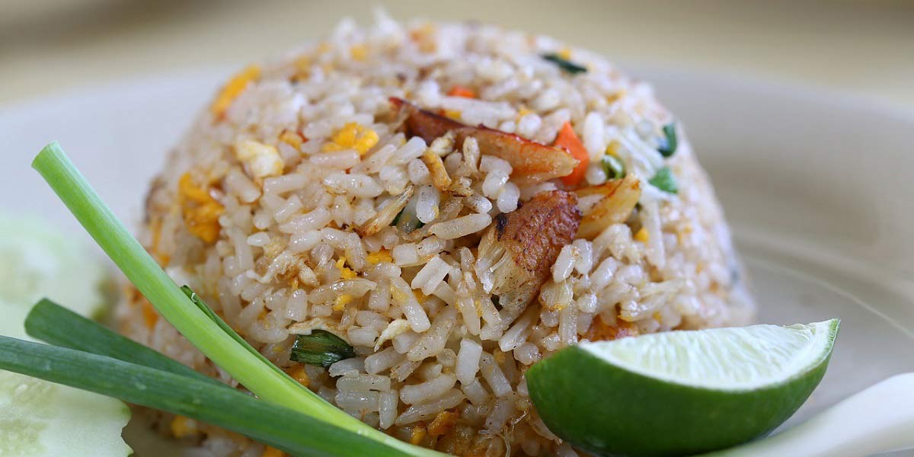

Egg Fried Rice
Recipe Specification
Ingredients List
| Ingredients | Quantity |
|---|---|
| Basmati Rice | 200g |
| Medium Eggs | 2x1 |
| Vegetable Oil | 30ml |
| Sesame Oil | 2 tsp |
| Garden Peas | 70g |
| Spring Onions | 3 Stalks |
| Bean Sprouts | 100g |
| Dark Soy Sauce | 30ml |
Yield: 4-5 portions
Preparation
- Finely slice spring onions stalks.
- Wash basmati rice 3-4 times in running cold water.
- Crack and whisk eggs before seasoning with a pinch of salt & pepper and adding sesame oil. Set aside for later.
Cooking Instructions
- Place medium sized pan over a medium/high heat. Add rice and pour in 300ml of cold water before stirring, bringing to the boil and reducing to the simmer. Cover pan with lid and cook for 10 minutes. Wrap lid with tea towel to plug any gaps between it and the pan.
- Whilst rice is cooking, heat 20ml of vegetable oil in a separate pan and add whisked egg. Whisk mixture whilst it’s cooking to get small sized scrambled egg pieces. Once cooked, cool and set aside.
- Remove pan with rice in it from the heat and leave to stand with lid on, for a further 5 minutes to ensure fluffiness.
- Place a wok over a high heat, add remaining oil and spread evenly around the pan. Once oils is smoking, add fluffy rice and stir continually to ensure rice doesn’t stick to pan and that, it’s evenly coated with oil.
- Add garden peas, scrambled egg, spring onion, and bean sprouts. Stir-fry for 3-4 minutes before adding soy sauce and serving.

Serving Suggestions
Egg fried rice works well with Szechuan pork, sweet & sour chicken and stir-fried vegeables.
Storing instructions
Cool to room temperature before placing in an air-tight container and in the fridge. Consume rice within 4 days of making.
Reheating Instructions
Place in the microwave for 2-3 minutes.